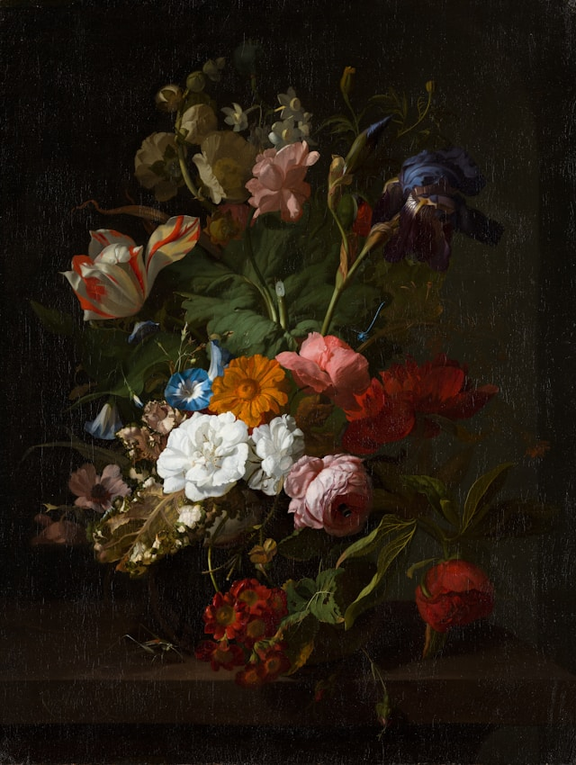
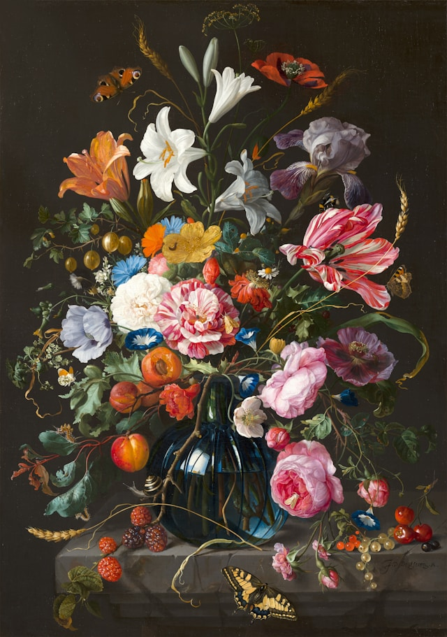
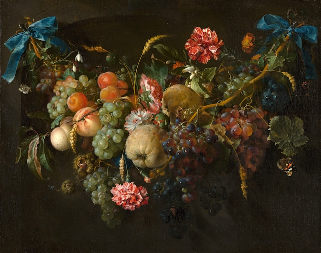

Pinturas a óleo são muito aclamadas no meio artistico pela vibrancia das cores e sua capacidade de transição de
cores e mistura suave, além do seu ar de renascentismo por ter sido tão marcante nessa epoca

Neste trabalho podemos observar como o artista consegue alcançar tons sobrios e os harmonizar de
forma uniforme em cada petala do arranjo

Neste trabalho vemos como o óleo pode alcancar cores vibrantes sem sacrificar sua capacidade de
mistura pelo modo como as transições das sombras e luzes conseguem ficar sutis

Vemos a mistura de ambos os mundos nesta obra, o modo como o artista misturou tons vivos e sombrios
para formar uma obra coesa que mostra perfeitamente o motivo pelo qual pinturas renascentistas são tão
iconicas e memoraveis